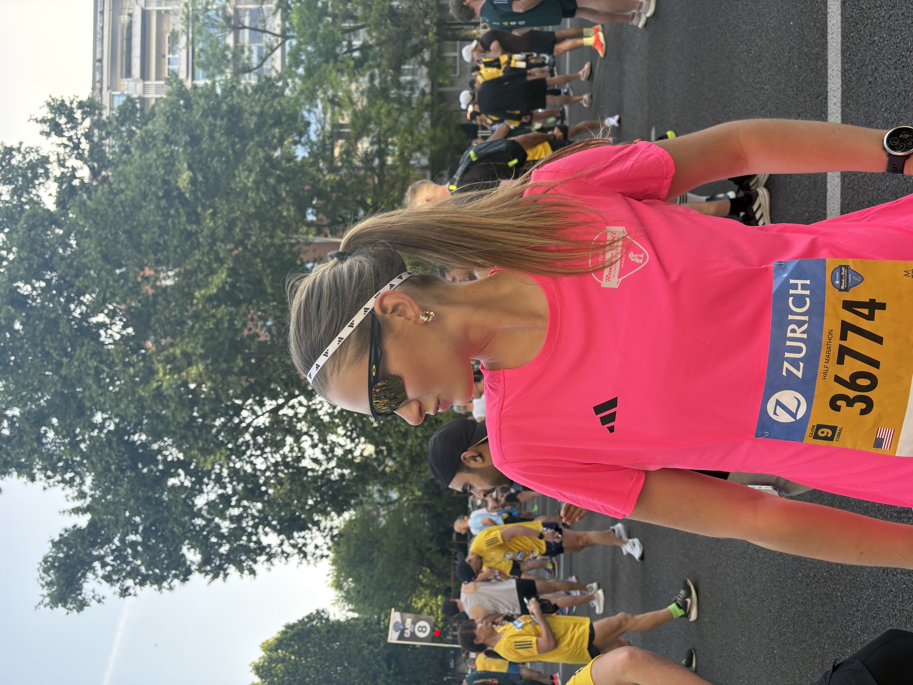

I've always believed the best conversations happen in third spaces, around the dinner table, or in the in-between places where strangers connect and form something genuine.
Food, photography, language, and travel are the ways I connect with people and the
communities they call home. The more I experience different perspectives, the more
I believe good ideas begin with understanding the people they're meant to serve.
That same curiosity is what drew me to engineering. I'm fascinated by how technology
shapes the way we live, and by the responsibility that comes with building it. That
curiosity has led me toward climate technology, AI, and energy infrastructure. I
believe the most meaningful innovation is the kind that moves us forward without
asking us to compromise the future of the planet.

Currently
Exploring and documenting California's nature as I travel the West Coast with my family
Training for my second half marathon (Hamptons, here I come!) in the fencing off season
Designing and building websites for fun — custom-coded for friends, for projects, and for the love of making things look beautiful and interactive on screen
Building Seva — a shared AI brain to lighten the load of caring for your elderly loved ones
Developing easy summer recipes: from light grill-focused dinners to fun ice cream combos
What's on my mind?
Where AI and carbontech intersect, and how we push innovation forward without losing sight of the environment we're building it for
How pop-ups are becoming the third spaces of our generation and what it would take to help them find and build their communities faster
Creating a digital home for my photography beyond social media to preserve creative work across mediums
How living somewhere — not just visiting — is the fastest way to actually learn a culture, thinking back to my semester in Madrid
Cooking through different techniques and cuisines to bring friends together around a table full of something new